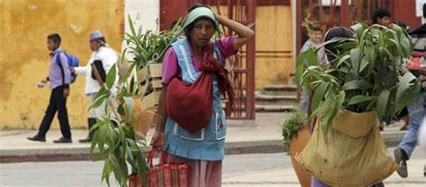
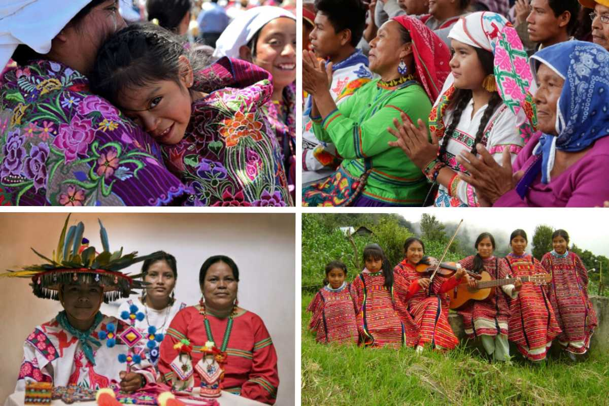
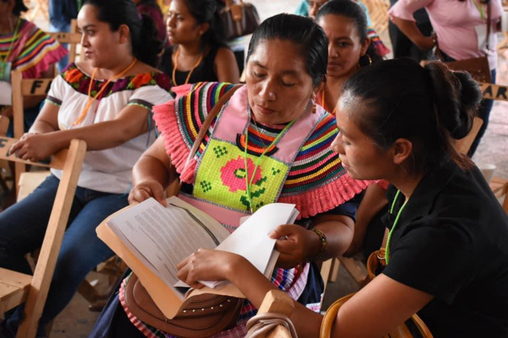
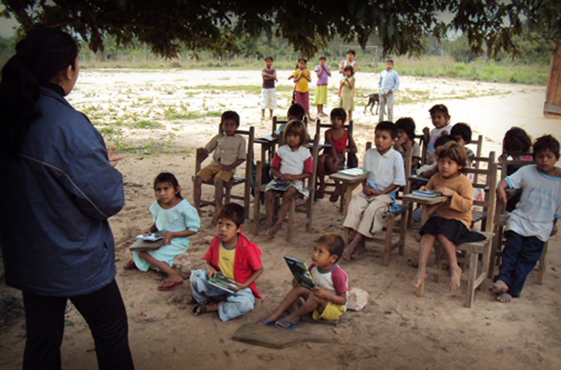

Los pueblos indígenas de México enfrentan una serie de desafíos históricos y actuales que han
impactado su desarrollo y bienestar. A pesar de su importancia en la identidad cultural del país,
siguen padeciendo problemas como la discriminación, la pérdida de territorio y la lucha constante
por preservar sus tradiciones. A continuación, se analizan algunos de los principales retos que
enfrentan estas comunidades.

Discriminación y Desigualdad
La discriminación hacia los pueblos indígenas en México es un problema profundo que ha persistido a
lo largo de la historia. A pesar de que la Constitución reconoce sus derechos y el país se ha adherido
a tratados internacionales en su defensa, muchas comunidades siguen enfrentando exclusión y desigualdad
en diferentes ámbitos:
Educación: Aunque existe la educación indígena y bilingüe, los recursos destinados a estas
comunidades son insuficientes. Muchas escuelas indígenas carecen de materiales adecuados y los
alumnos enfrentan dificultades para continuar sus estudios más allá del nivel básico.
Salud: La falta de acceso a servicios de salud de calidad es un problema grave.
Muchas comunidades se encuentran alejadas de hospitales y clínicas, y hay pocos médicos que
hablen lenguas indígenas, lo que dificulta la atención. Además, enfermedades como la
desnutrición y la diabetes afectan de manera desproporcionada a estas poblaciones.
Empleo y economía: La mayoría de los pueblos indígenas se dedican a actividades como
la agricultura, la pesca y la artesanía, pero la falta de apoyo gubernamental y la
competencia con grandes industrias dificultan su desarrollo económico. Muchos indígenas
migran a las ciudades en busca de empleo, donde enfrentan discriminación y condiciones
laborales precarias.

Pérdida de Territorio y Derechos
El despojo de tierras es una de las mayores problemáticas que enfrentan los pueblos indígenas.
Históricamente, han sido desplazados de sus territorios debido a la colonización, la expansión de
centros urbanos y la explotación de recursos naturales. En la actualidad, este problema continúa con:
Megaproyectos e industrias extractivas: La construcción de presas, carreteras, minas y
proyectos turísticos ha llevado al desplazamiento forzado de muchas comunidades indígenas.
En muchos casos, estos proyectos afectan el medio ambiente y destruyen espacios sagrados
para sus habitantes.
Deforestación y daño ecológico: Muchas comunidades indígenas dependen de los recursos
naturales para su subsistencia, pero la tala ilegal, la expansión agrícola y el cambio climático
han reducido sus territorios, afectando su modo de vida.
Conflictos territoriales: En varias regiones del país, los pueblos indígenas han tenido
que organizarse para defender sus tierras contra invasiones y disputas con empresas privadas y
gobiernos. La lucha por el reconocimiento de sus derechos territoriales sigue siendo una de sus
principales demandas.

Esfuerzos por Preservar las Tradiciones
A pesar de los desafíos, los pueblos indígenas han desarrollado diversas estrategias para mantener
viva su identidad cultural. Algunos de los esfuerzos más importantes incluyen:
Revitalización de lenguas indígenas: Muchas comunidades han implementado programas de
enseñanza de sus lenguas a las nuevas generaciones, además de promover su uso en espacios
públicos y medios de comunicación.
Rescate de festividades y costumbres: Las celebraciones tradicionales, la medicina
ancestral y la cosmovisión indígena han sido promovidas por líderes comunitarios y
organizaciones culturales para evitar su desaparición.
Uso de tecnología para la preservación cultural: Actualmente, existen iniciativas que
utilizan redes sociales, plataformas digitales y documentales para difundir las tradiciones
indígenas y educar a la sociedad sobre su importancia.

Los pueblos indígenas de México han demostrado una gran resistencia y capacidad de adaptación a lo
largo del tiempo. Sin embargo, la discriminación, la pérdida de sus territorios y los retos para
preservar su cultura siguen siendo obstáculos significativos. Es fundamental que la sociedad y el
gobierno trabajen en conjunto para garantizar el respeto, la protección y la promoción de los
derechos indígenas, asegurando que su riqueza cultural y su forma de vida sean valoradas y
preservadas para las futuras generaciones.